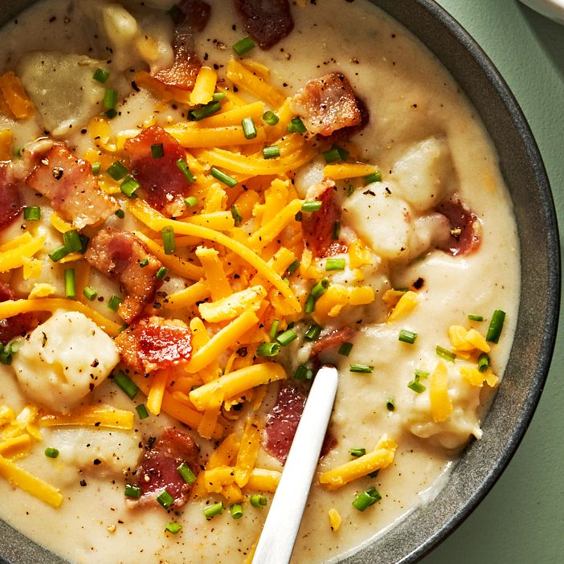

Potato Soup Recipe

Description
A simple but delicious recipe to warm you up in the cold winter days.
Ingredients
- 6 slices bacon
- 2 pounds russet potatoes
- 1 yellow onion
- 4 cups chicken broth
- 1 1/2 cups Half-n-Half
- Cheddar cheese
- 1/2 cup Sour cream
Steps
- Cook bacon until crisp, 10-12 minutes. Set aside
- Cook onion, 5-7 minutes. Pour in broth.
- Add potatoes, Half-n-Half and salt and pepper to taste.
Cover pot, then set to pressure cook on high for 8 minutes. Slow release pressure.
- Uncover pot and stir in sour cream. Use an immersion blender until only some chunky bits remain
- Top with chedar and bacon to serve.